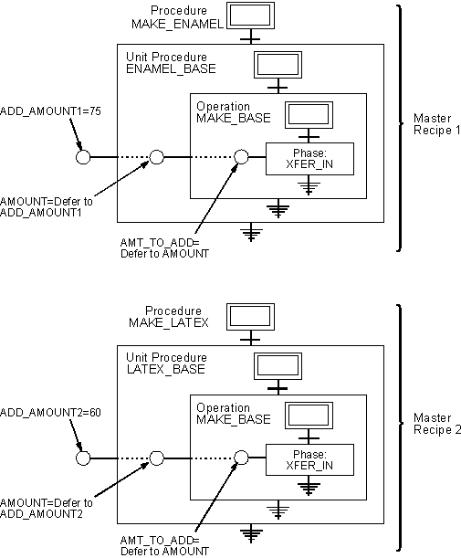

Working with constant value parameters
Constant value step parameters are typically used when several master recipes share two or more operations. When you define a constant value step parameter, you enter a specific value for it. This value lets you define the correct value prior to assigning a recipe to a Batch Executive and making it available to an operator in the Batch Operator Interface. When the step runs, the specified value automatically overrides the default prior to executing the step. By automatically overriding the step parameter's default value, you eliminate the potential of an operator entered error.
For example, assume the operation MAKE_BASE from the sample application is shared by two master recipes. If both master recipes require different values for the AMT_TO_ADD step parameter, you could create two copies of the same operation, one for each master recipe. Then, you could individually define the values of each step parameter for each master recipe.
The drawback to this approach is that if the operation changes you need to make the same changes twice, once for each copy of the operation. This can be time consuming, particularly if the operation changes frequently.
A better approach is to create one generic operation and define unique constant value formula parameters for each master recipe. Because the values of the formula parameters are unique to a master recipe, they do not affect the other master recipes. More importantly, because you define the operation only once, you save on maintenance. The following figure shows how to set up these parameters.
